Unlock your real Beauty
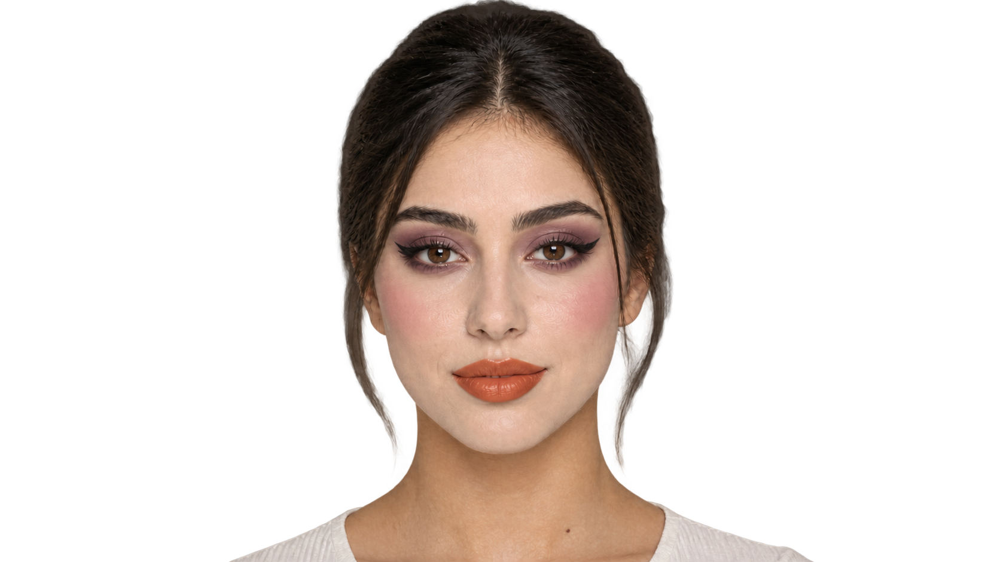
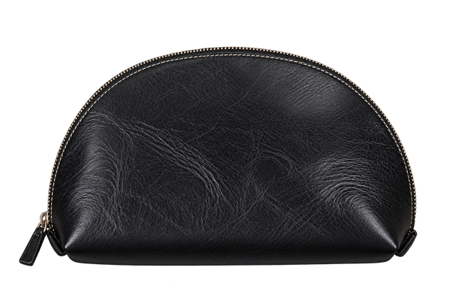
How it works
What actually happens between your photo and your finished look.
- 01add_photo_alternate
Two photos · your products
You bring the look, your face, and your kit
Upload the look you want to recreate and a clean, naturally lit photo of yourself. Then add the products you already own — that list is what everything after this is measured against.
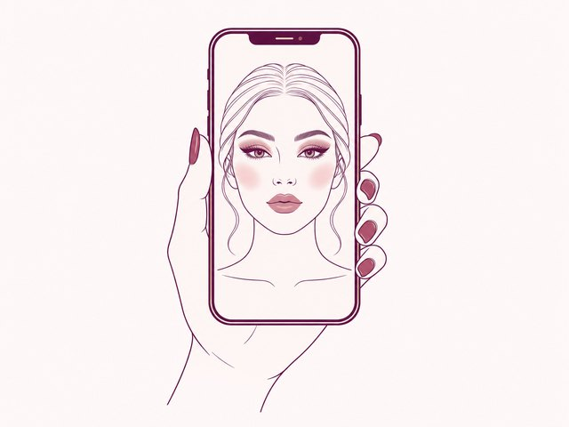
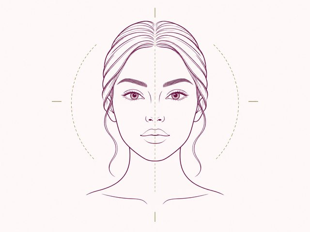
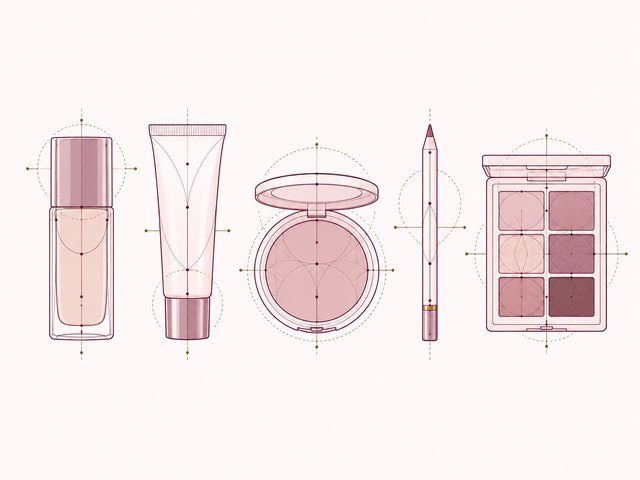
Consent required · your photos stay yours
- 02face_retouching_natural
Detected, then confirmed by you
Glamé reads your features
The facial analysis model reads face shape, eye shape, eyelid type, lip shape, skin tone and undertone — each with its own confidence score. Nothing is locked in: you confirm or correct every value before it is used.
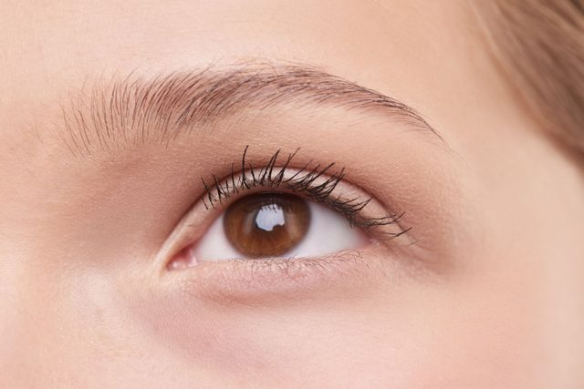
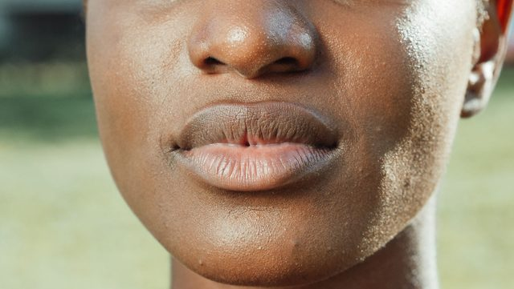
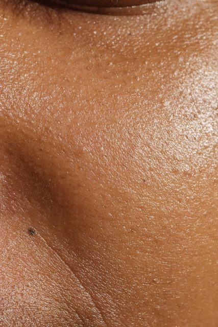
Facial feature analysis
- 03auto_fix_high
Not a filter, not a copy
It reads the look, then adapts it to you
A second model breaks the inspiration down into what it is actually doing — placement, intensity, finish. The adaptation engine then rewrites those choices for your features instead of pasting them onto you.
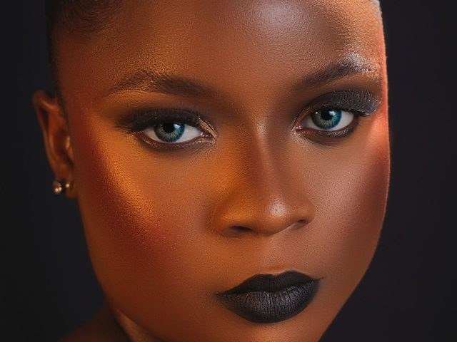
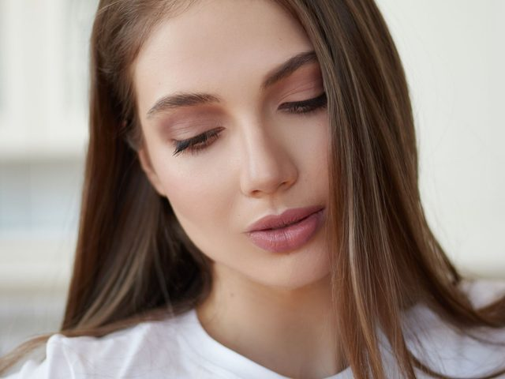
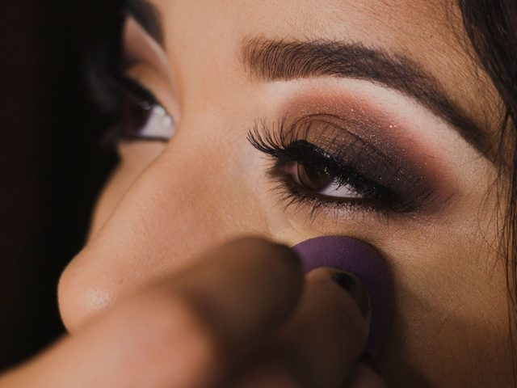
Look analysis · adaptation
- 04inventory_2
Owned first, always
It matches the look against your own kit
Your products are checked shade by shade against what the adapted look needs. You get a coverage summary of what you can already achieve today — and only the genuine gaps become a short, honest list worth buying.
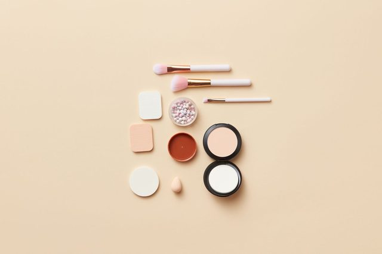
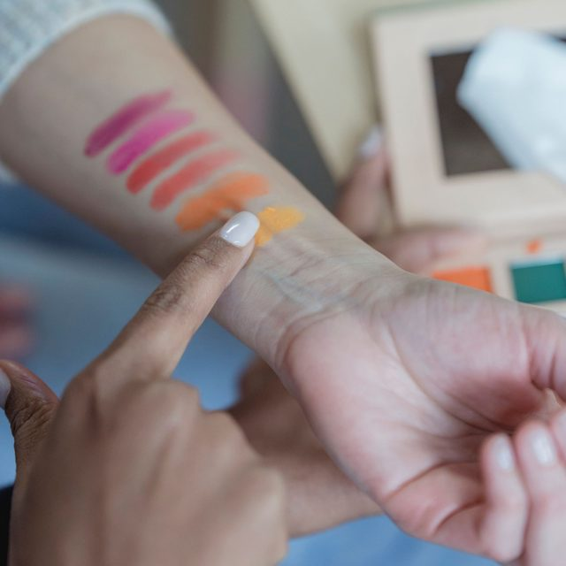
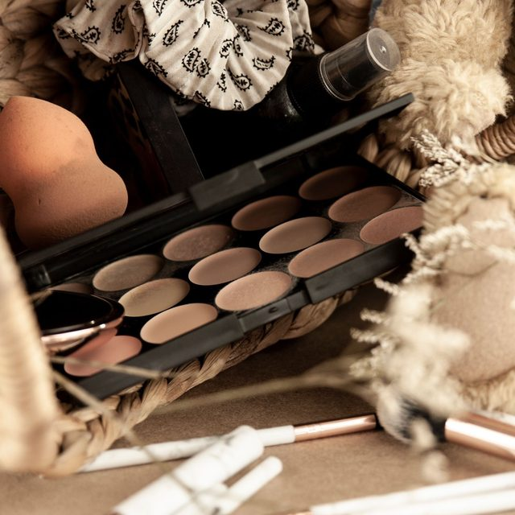
Owned-first recommendations
- 05menu_book
Ordered · yours to keep
You get a guide, step by step
The result is an ordered application guide: what to use, where it goes, and in what order — written against the products in your kit, not a generic tutorial.
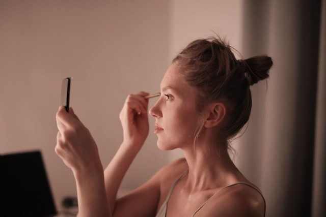
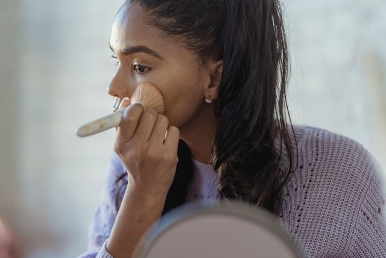
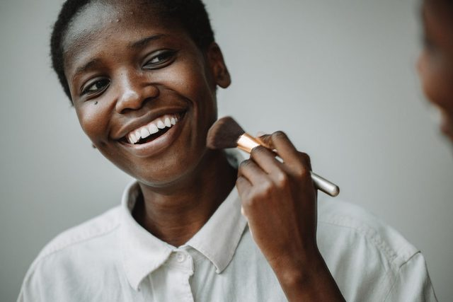
Application guide
See what you get
A concrete, illustrated breakdown for your vanity table.
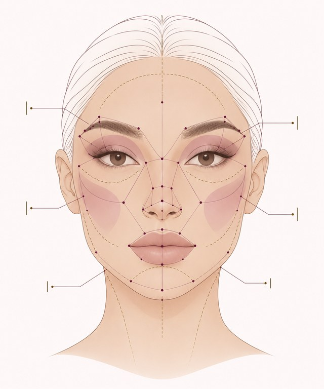
Luminous Natural Sculpt
Base Preparation
Skin tint buffed outward with fingertips across center plane.
Eye Architecture
Soft wash of neutral taupe across mobile lid, faded gently toward the brow bone.
Cheek Placement
Press cream plum blush high on zygomatic bone, tapping upward towards temples.
Refinement
Optional GapAngled blending brush for a diffused, seamless transition along perimeter.
A real guide you follow yourself — not a synthetic face filter.
"The best product is the one already in your kit."
We believe beauty should be mindful, sustainable, and personal. We will never nudge you to buy a duplicate of something you already cherish, nor shame you for having a favorite stick that's three years old.
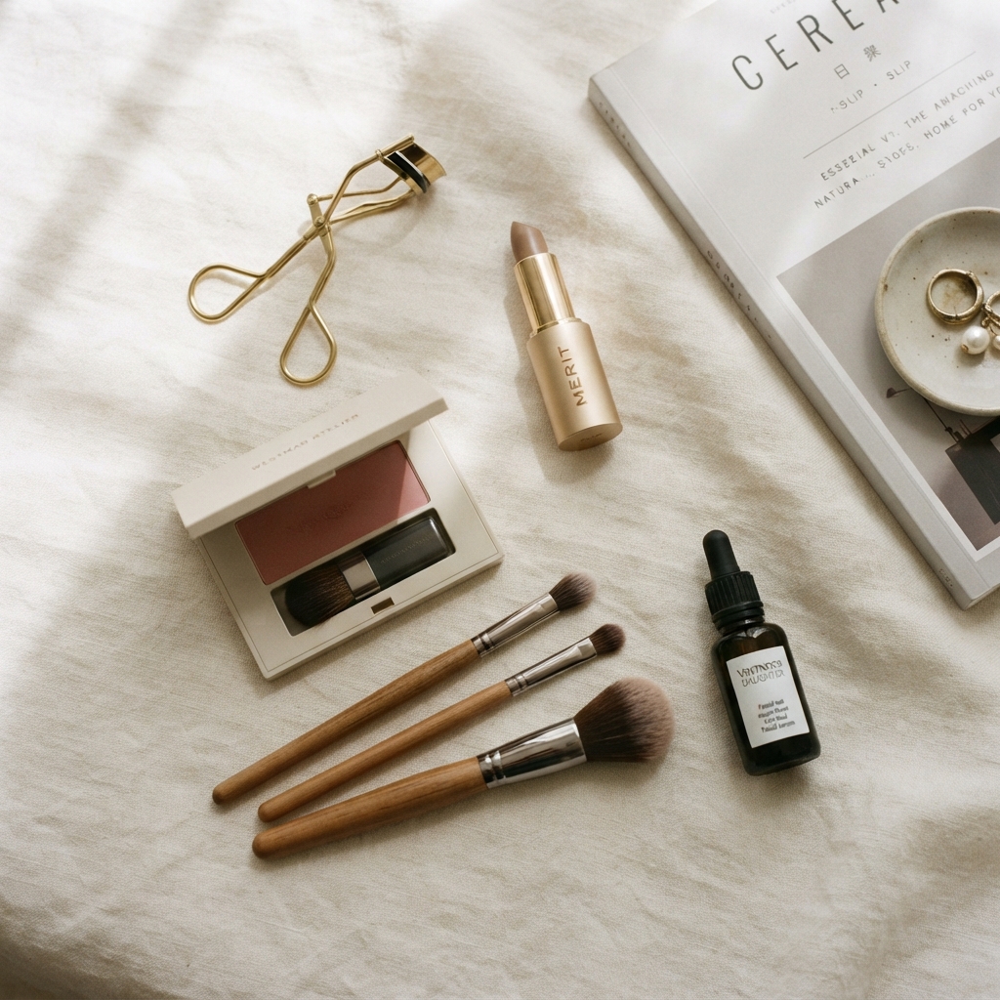
Finally, an app that looked at my cluttered bathroom counter and told me exactly how to use the blush I bought three years ago instead of pushing a $60 palette on me.
Ready to rediscover your kit?
Find confidence in effortless, everyday application with what you already own.
Get started